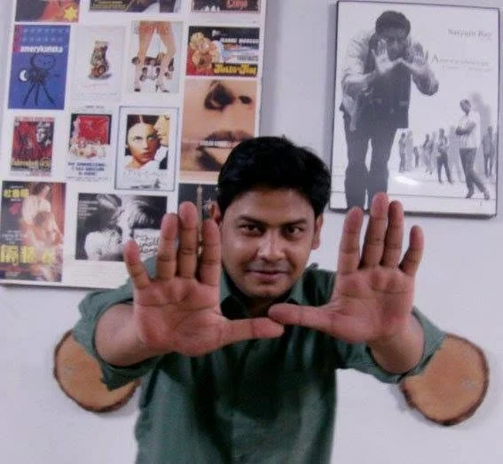
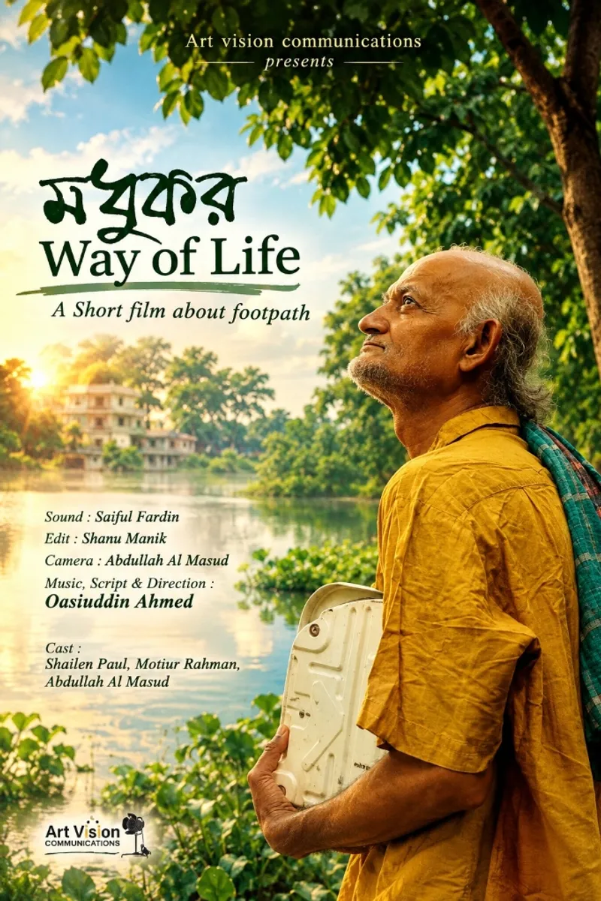
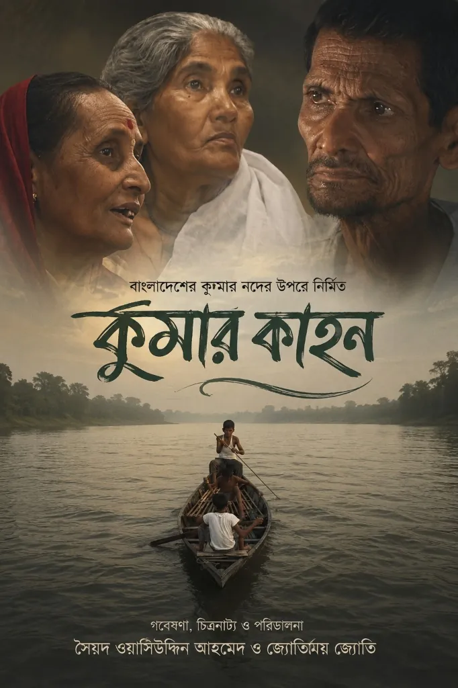
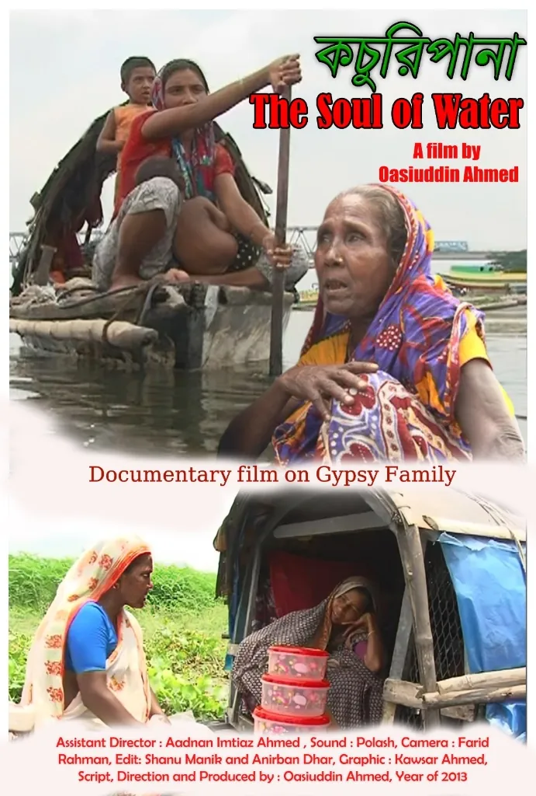
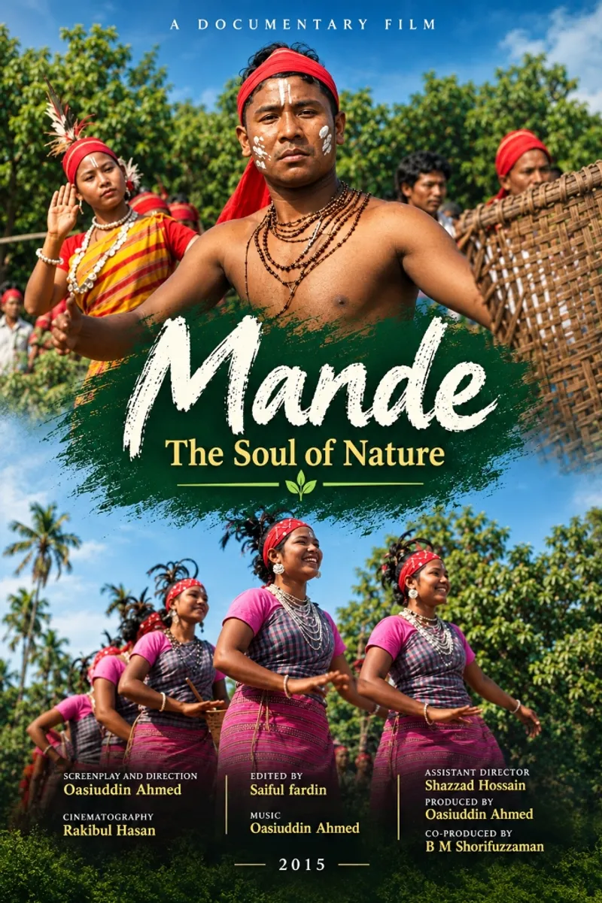
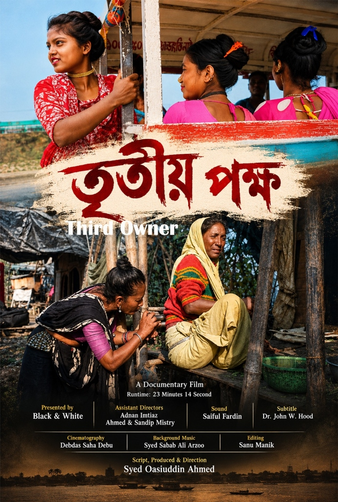

Syed Oasiuddin
Ahmed
About The Filmmaker

A passionate documentary filmmaker and screenwriter from Khulna, Bangladesh. A graduate of the Bangladesh Film Institute (2009), Syed Oasiuddin Ahmed has dedicated over a decade to crafting intimate, socially conscious films that illuminate the lives and stories of ordinary people.
His works span documentaries and short fiction films, marked by a humane gaze and quiet visual poetry.
Education & Training
Films As Director

মধুকর
Madhukar — Way of Life
An observational short film about begging as a way of life — examining the quiet dignity and resilience of those living on the margins of society.
▶ Watch Film
ফেরা
Phera — Return
A visually layered meditation on the concept of return — to one's roots, to memory, to the people and places that define who we are.
▶ Watch Film
কুমার কাহন
Kumar Kahon
A documentary exploring the life, communities, and culture along the Kumar River in Bangladesh.
Archive
কচুরিপানা
The Soul of Water
A portrait of life on Bangladesh's waterways, seen through the metaphor of the water hyacinth — an invasive plant woven into the daily rhythm of riverine communities.
Archive
মান্দি
Mande — The Soul of Nature
An intimate documentary exploring the lives, culture, and rich traditions of the indigenous Mande (Garo) community, illustrating their deep connection to nature.
Archive
তৃতীয় পক্ষ
Third Owner
His most recent work — exploring multiple perspectives on a social issue, giving voice to those rarely heard in mainstream narratives. Released in 2025.
Not Publicly AvailableSelected Credits
Films as Assistant Director
| Title | Type | Duration | Format | Year |
|---|---|---|---|---|
|
লালসালু
A Tree Without Roots · by Tanvir Mokammel
|
Feature | 110 min | 35mm · Colour | 2001 |
|
লালন
Lalon · by Tanvir Mokammel
|
Feature | 140 min | 35mm · Colour | 2004 |
|
রাবেয়া
The Sister · by Tanvir Mokammel
|
Feature | 105 min | 35mm · Colour | 2007 |
|
জীবনঢুলি
The Drummer · by Tanvir Mokammel
|
Feature | 90 min | 2K · Colour | 2014 |
|
রূপসা নদীর বাঁকে
Quiet Flows the River Rupsa · by Tanvir Mokammel
|
Feature | 137 min | 2K · Colour | 2020 |
| Title | Type | Duration | Format | Year |
|---|---|---|---|---|
|
জাপানি বধূ
'The Japanese Wife' · by Tanvir Mokammel
|
Documentary | 67 min | Digital | 2012 |
|
সীমান্তরেখা
The Borderline · by Tanvir Mokammel
|
Documentary | 124 min | Digital | 2019 |
|
মতুয়ামঙ্গল
The Saga of the Motuas · by Tanvir Mokammel
|
Documentary | 100 min | HDTV | 2025 |